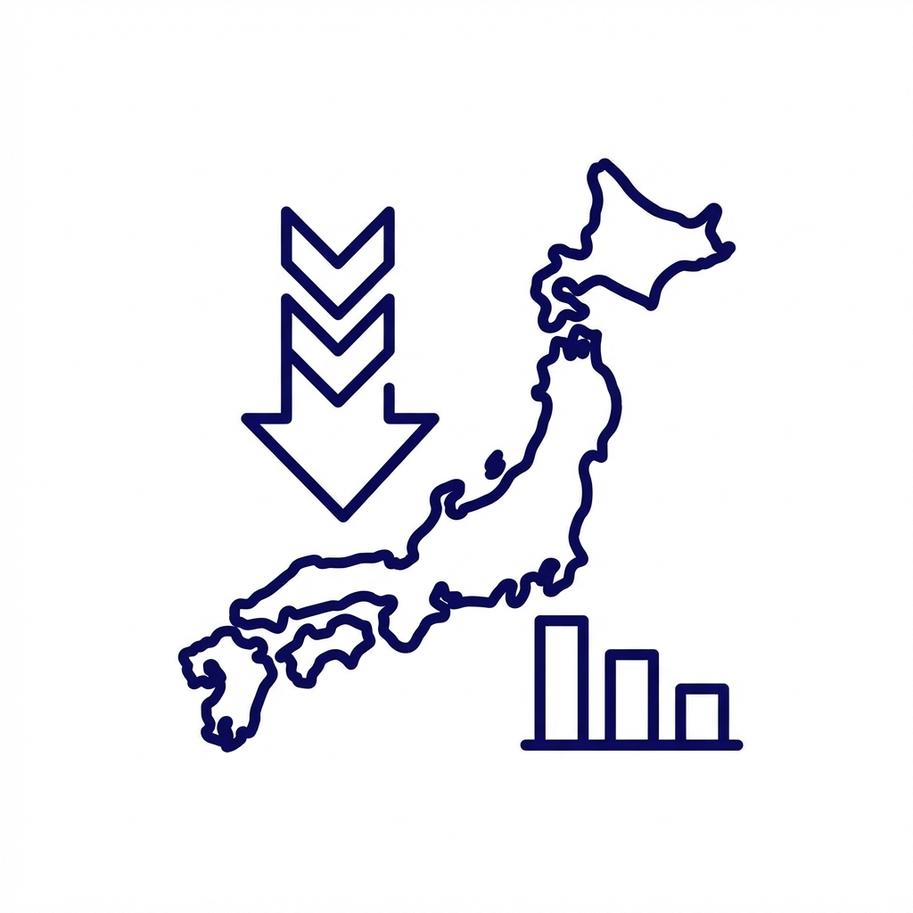
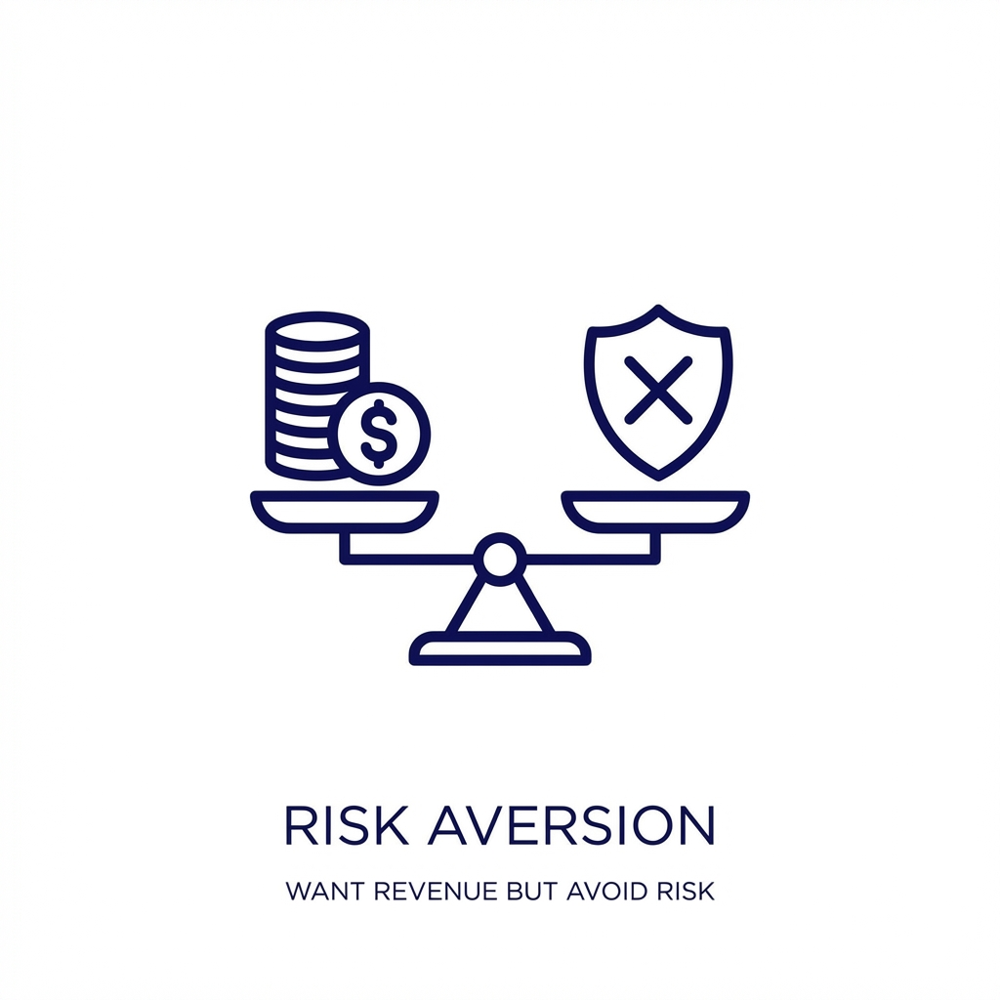

CHALLENGES
今の経営状況の課題を
NEXTの独自システムで解決いたします！

国内市場への限界と危機感
今の事業一本に頼り切った経営体制に、将来的なリスクを感じている…

売上を上げたいがリスクは避けたい
売上は欲しいが、多額の資金が必要なビジネスや施策はできない…
新規事業を立ち上げたいが人手が足りない
新しい柱を作りたいが、既存社員は今の業務で手一杯。かといって、新規事業のために人を雇えない…
海外展開したいがノウハウがない
円安をチャンスに変えたいが、社内に輸出の知見がある人材がいない…